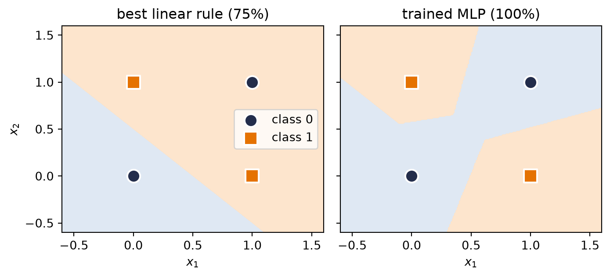

Our linear models can regress (Chapter 1) and classify (Chapter 2), and it is tempting to think we could get more power by simply stacking them: feed the output of one linear layer into another. Watch what happens:
The stack collapses. Two linear layers, or twenty, are exactly one linear layer with different knobs \(\rightarrow\) no amount of stacking buys any new expressive power. To learn the patterns of the real world we need a magic ingredient: nonlinearity. This chapter is about what one small bend does to everything.
3.1 The tiny dataset that embarrassed a field
You do not need real-world data to expose the linear ceiling. Four points suffice. The XOR function outputs 1 exactly when its two binary inputs differ:
\(x_1\)
\(x_2\)
XOR
0
0
0
0
1
1
1
0
1
1
1
0
Plot the four points and try to separate the 1s from the 0s with a single line. The positive examples sit on one diagonal, the negatives on the other; any line you draw puts at least one point on the wrong side. A linear classifier cannot represent this function, no matter how it is trained.
NoteA historical scar
This is not a toy observation. The limitations of single-layer perceptrons, including XOR, were publicized in 1969 and became emblematic of the case against that research program. They contributed to reduced enthusiasm and funding, but they were not a single-cause explanation for the first “AI winter”; limited compute, data, and unmet promises mattered too. Multi-layer networks and practical backpropagation (Chapter 5) later removed the representational obstacle exposed here.
Let us confirm the ceiling empirically. We reuse the framework loop previewed in Chapter 1 as a measuring instrument; Chapter 4 and Chapter 5 will explain the optimizer and backward() rather than asking you to treat them as magic.
The cross-entropy optimum for this symmetric XOR dataset assigns probability \(0.5\) to all four points, with loss \(\log 2 \approx 0.693\). Turning those exact ties into hard labels with a floating-point threshold can report 25%, 50%, or 75% because of tiny rounding differences; that number is not evidence about the classifier. The honest geometric statement is that a hard linear boundary can classify at most three of the four points (75%), while the little network with a bend is perfect.
Code: decision regions
import numpy as npimport matplotlib.pyplot as pltgx, gy = np.meshgrid(np.linspace(-0.6, 1.6, 220), np.linspace(-0.6, 1.6, 220))grid = torch.tensor(np.stack([gx.ravel(), gy.ravel()], 1), dtype=torch.float32)fig, axes = plt.subplots(1, 2, figsize=(7.4, 3.4), sharey=True)for ax, model, title in [(axes[0], None, "best linear rule (75%)"), (axes[1], mlp, "trained MLP (100%)")]:with torch.no_grad():if model isNone: Z = (grid.sum(1) -0.5>0).float().reshape(gx.shape)else: Z = (model(grid).squeeze(-1) >0).float().reshape(gx.shape) ax.contourf(gx, gy, Z, levels=[-0.5, 0.5, 1.5], colors=["#DCE6F2", "#FDE3C8"], alpha=0.9)for cls, marker, color in [(0, "o", "#232D4B"), (1, "s", "#E57200")]: pts = X_xor[y_xor == cls] ax.scatter(pts[:, 0], pts[:, 1], marker=marker, s=120, c=color, edgecolors="white", linewidths=1.5, zorder=3, label=f"class {cls}") ax.set_title(title); ax.set_xlabel("$x_1$")axes[0].set_ylabel("$x_2$"); axes[0].legend(loc="center right")plt.tight_layout(); plt.show()

Figure 3.1: Left: a representative best linear boundary gets three of four XOR points right, but one point must remain on the wrong side. Right: the trained 4-hidden-unit MLP carves separate regions for the two positive corners.
3.2 The neuron: a threshold with a bend
The artificial neuron takes its inspiration from biology: a neuron receives signals, and it fires only when the accumulated stimulus crosses a threshold. The modern, computationally friendly version of that thresholding is the rectified linear unit:
The weighted input \(\vect{w}^\top\vect{x} + b\) is the stimulus — and recall from Chapter 1 that it is a similarity score against the template \(\vect{w}\). Below threshold, the neuron is silent (output 0); above it, the neuron fires with intensity proportional to the stimulus.
In one dimension a single neuron turns a line into a hinge, and in two dimensions it draws a line through the plane: an OFF region and an ON region, with \(\vect{w}\) perpendicular to the boundary. That boundary is the fundamental unit of computation in everything that follows.
(What about the sharp corner at \(z=0\), where the derivative is undefined? Libraries choose a subgradient convention, commonly 0. Exact zeros can occur systematically with zero biases, sparse activations, or symmetric inputs, so the convention is not merely academic. The gradient story of this open-or-shut gate — including when it helps and when a unit goes dead — is told in Chapter 5.)
3.3 Layers of hinges: bumps and polytopes
One neuron makes one boundary. A layer of \(k\) neurons makes \(k\) boundaries, and their intersections partition the input space into convex polyhedral regions (bounded ones are polytopes), and within each cell the layer computes a plain linear function. For fixed input dimension \(d\), the maximum region count of one generic hyperplane arrangement grows on the order of \(k^d\).
The simplest compact constructive example lives in 1D. Combine three hinges so the slopes cancel again after the third breakpoint:
Figure 3.2: Three hinges make a compact triangular bump: the first starts the rise, the second reverses the slope, and the third cancels it back to zero. Bumps are the brush strokes of function approximation.
Follow the pieces: before the first hinge, all units are silent and the output is zero. After the first breakpoint, \(h_1\) starts the climb. The coefficient \(-2\) on \(h_2\) reverses the slope at the peak, and \(h_3\) cancels that downward slope at the final breakpoint. Four linear pieces \(\rightarrow\) one compact bump.
3.4 The universal approximation theorem
Bumps are the whole secret. If you can make one bump, you can make many, at any position and height \(\rightarrow\) with enough hidden units you can tile any continuous function, the way an artist paints a shape with brush strokes. That is the intuition behind the universal approximation theorem: a network with a single hidden layer can, in principle, approximate any continuous function on a bounded region to any desired accuracy.
Figure 3.3: One hidden ReLU layer approximating a continuous curved target. Width 2 is too rigid; width 8 catches the shape; width 64 follows it closely. Width buys more hinge locations, but the theorem itself does not tell the optimizer where to place them.
Now read the theorem’s fine print, because it is where beginners over-promise:
WarningWhat the theorem does not say
It does not tell you how to find the weights — existence of a good network is not a training algorithm. Finding the weights is the job of the loss and the optimizer, and nothing guarantees gradient descent lands on the theorem’s solution.
It does not say the network is small. Tiling a complicated function with one-layer bumps can require astronomically many units.
In its usual uniform-approximation form, it speaks of continuous functions on bounded regions and says nothing about how the fit behaves between or beyond your samples. A continuous ReLU network cannot uniformly approximate a jump to arbitrary accuracy: near the jump its worst-case error stays at least half the jump size. Under a mean-square (\(L_2\)) criterion, however, it can squeeze the transition into a narrow interval and make the average error arbitrarily small. The norm and the target class matter. Approximation is still not generalization; that distinction gets its own chapter (Chapter 6).
3.5 Why depth: boundaries that bend
If one hidden layer suffices in principle, why is the field called deep learning? Efficiency, and geometry. A second hidden layer receives, as its inputs, the piecewise-linear outputs of the first \(\rightarrow\) its boundaries are no longer straight lines. They bend wherever the first layer’s boundaries cut the space. Boundaries composed of boundaries: each layer folds the space the previous layer drew.
Figure 3.4: The plane, colored by which ReLUs are on/off in a random 2-layer network (2 → 8 → 8): every cell is a region where the network is exactly linear. First-layer boundaries are straight; second-layer boundaries visibly bend where they cross them.
This bending can compound dramatically. For suitable ReLU constructions at fixed input dimension, achievable region counts grow exponentially with depth, while a single hidden layer’s count grows polynomially with width. This is an existence and architecture-dependent comparison, not a promise that every trained deep network realizes all those regions. It gives the economic argument for depth: some partitions represented by a deep, narrow network require far more units in a shallow one.
3.6 Your first real MLP
Time to build the thing properly, the way the live session does: as a class.
TipCoding hygiene: the house and its foundation
Every model you write from now on subclasses nn.Module, and the first line of your __init__ is always super().__init__(). Think of it as pouring the foundation before building the house: it is what wires up parameter tracking, .parameters(), and everything the optimizer and autograd need. Forget it and PyTorch fails loudly — the one favor a framework can do you.
Code
class MLP(nn.Module):"""A multilayer perceptron: linear layers with bends between them."""def__init__(self, input_dim: int, hidden_dim: int, output_dim: int):super().__init__() # the foundationself.hidden = nn.Linear(input_dim, hidden_dim)self.out = nn.Linear(hidden_dim, output_dim)def forward(self, x: torch.Tensor) -> torch.Tensor:returnself.out(torch.relu(self.hidden(x)))
And a problem worthy of it: two interleaved moons, the classic shape no line can separate well. Same training loop as always — the model is the only thing that changed:
Figure 3.5: Two moons: the linear model does what it can with one line (about 90% here); the MLP bends its boundary through the gap and separates the classes completely.
One honest footnote on the XOR network: in principle two hidden units suffice, but such minimal networks are temperamental; across random seeds they frequently get stuck at 50% accuracy with silent units (you will verify this in Exercise 3). A few spare units cost little and improve reliability. Chapter 4 will examine when optimization noise helps exploration, without treating it as a guaranteed escape.
3.7 A cautionary tale, and a look ahead
There is a seductive story about what the layers of an MLP learn: the first layer detects edges, the next combines them into shapes, the next into objects — a tidy hierarchy of increasingly abstract features. It is the idealized story, and for fully-connected networks on raw images it is mostly not what happens. A fully-connected layer sees its input as one long, structureless vector; it has no notion that pixel potentially relates to its neighbor. Nothing in the architecture encourages the tidy hierarchy, and with every pixel connected to every unit, the parameter count explodes long before the hierarchy emerges.
We now hold real expressive power — networks that can, in principle, represent almost anything. Chapter 4 trains them at scale and Chapter 5 supplies their gradients. And then Chapter 6 asks this chapter’s uncomfortable question: what happens when all that flexibility meets data it does not understand the structure of? The answer — watch an MLP fail, in pictures, then fix it by building knowledge into the architecture — is the turn the whole book pivots on.
3.8 Okay, so — one bend changed everything
Linear stacks collapse (Equation 3.1); XOR proves four points can defeat any line.
A neuron is a thresholded similarity score: below the boundary silent, above it proportional. One neuron \(\rightarrow\) one boundary; a layer \(\rightarrow\) a polyhedral partition; three hinges \(\rightarrow\) a compact bump.
Bumps tile functions (universal approximation) — but the theorem promises existence, not learnability, economy, or generalization.
Depth bends boundaries: suitable deep constructions can create region counts that grow exponentially with depth, yielding large efficiency gaps relative to comparable shallow constructions.
The MLP is a class now (nn.Module, foundation first), and it separates what no line can.
(Pencil.) Generalize Equation 3.1: show by induction that any stack of \(L\) linear layers equals a single linear layer. Where exactly does inserting \(\mathrm{ReLU}\) between layers break your proof?
(Pencil.) Using the bump construction, give explicit weights for a one-hidden-layer network that outputs approximately 1 on \([0,1]\) and 0 outside \([-0.2, 1.2]\). How many hidden units did you need?
(Code.) Retrain the XOR network with hidden_dim = 2 across ten different seeds. How often does it reach 100%? Inspect a failed run: what happened to its hidden units? (Hint: check how many are permanently silent.)
(Code.) In the polytope figure, count distinct activation patterns as you vary width at depth 1 versus depth at width 4 (keep total units comparable). Which grows the region count faster?
(Code.) Replace the moons MLP’s ReLU with nn.Identity() and retrain. Explain the resulting boundary in one sentence using Equation 3.1.